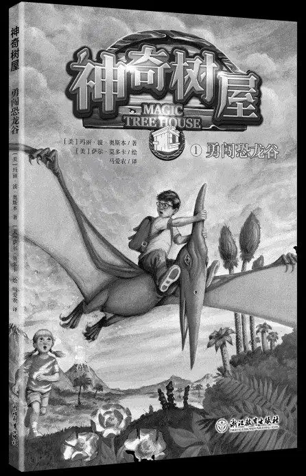
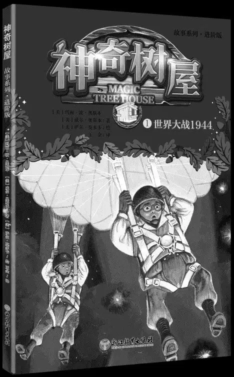
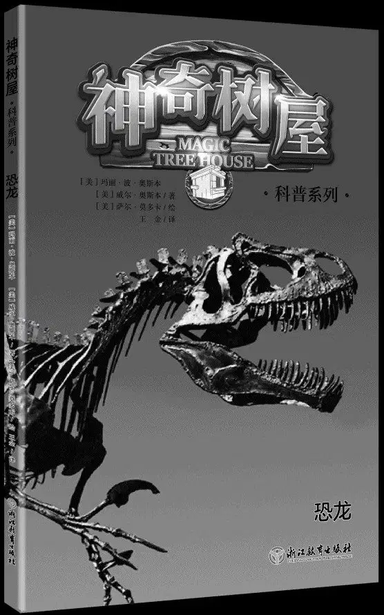
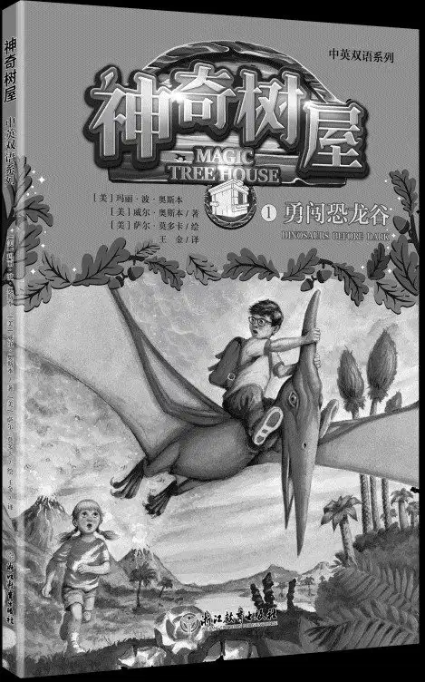

“神奇树屋”系列简介
整个图书系列包括以下四个套系，每一个套系都针对不同年龄段的孩子，一起来看看，你适合读哪一套吧！（封面以实际出版物为准）
适读年龄：6～10岁

“神奇树屋”系列图书的入门读物，语言生动简洁，采用不复杂的短句子，适合刚从幼儿园升入小学、需要大量认识汉字的孩子，帮助孩子喜欢上文字书，走进“独立阅读”。
适读年龄：10～14岁

“神奇树屋”系列图书的进阶读物，线索更多，语言更丰富，句子更复杂，文字量更大，适合不满足于“基础版”的孩子，也适合识字量大、追求更多精彩内容的孩子。
适读年龄：6～14岁

“神奇树屋”系列图书的科普读物，是故事系列的扩展阅读篇，将故事与历史、地理、人文、科学等知识完美结合，书中推荐了相关书籍、资料、视频、博物馆，特别适合热爱在生活里探索发现的孩子。
适读年龄：6～14岁

“神奇树屋”系列图书的双语读物，采用循序渐进的方式，一步步增加词汇量和句子难度，让孩子熟练掌握英语，全面提升阅读能力、写作能力和口语表达能力。